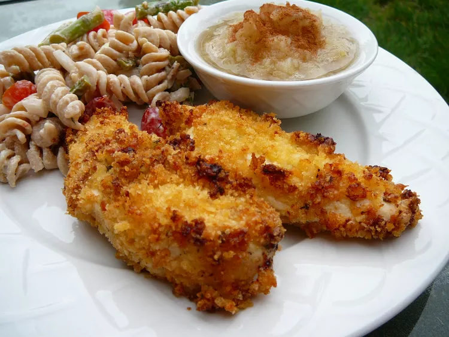

Home
Tender Italian Baked Chicken
Description:
An easy recipe for a delicious Tender Italian Baked Chicken
Ingredients:
- ¾ Cup mayonnaise
- ½ Cup grated Parmesan cheese
- ¾ Teaspoon garlic powder
- ¾ Cup Italian seasoned bread crumbs
- 4 Skinless, boneless chicken breast halves
Steps:
- Preheat the oven to 425 degrees F (220 degrees C).
- Mix mayonnaise, Parmesan cheese, and garlic powder together in a bowl. Place bread crumbs in a separate bowl. Dip each chicken breast into the mayonnaise mixture, then into the bread crumbs to coat. Arrange breaded chicken on a baking sheet.
- Bake in the preheated oven until chicken is no longer pink in the center and the coating is golden brown, about 20 minutes. An instant-read thermometer inserted into the center should read at least 165 degrees F (74 degrees C).
